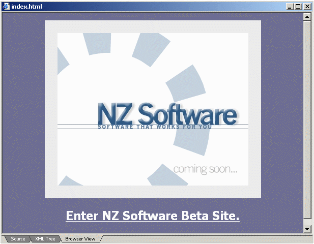

Displays the text file the same way it would look as if it was being viewed in a browser (IE). This view can be used to preview xml documents referring to xsl stylesheets, as well as html documents. Below is an example of previewing a HTML file:
